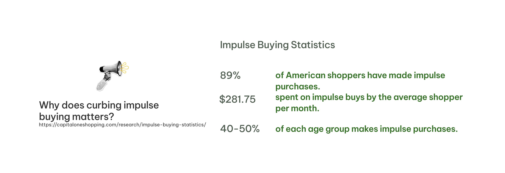

Mindful mint
Planning
MindfulMint encourages user to reflect on an item and offers a chance to save an item for later instead of buying it impulsively.
Goal:
- Awareness
- Accountability
- Convenience
- Mindfulness
| Project: | School CAPSTONE Project |
| Team: | Team of 3 (Designer, Researcher, Manager) |
| Timeline: | 10 weeks |
| My Role: | Played roles in rotation with other teammates while mainly playing UX Designer |
| Process: | UX Research, Competitive Product Analysis, User Interviews, Wireframing, Prototyping, Usability testing, Information Architecture, Product Strategy, Visual Design |




Discovering
-
The user category and the primary user persona represent the broad spectrum of individuals: all the shoppers who shop online mostly and frequently
-
The primary user persona are individuals who may not be chronic impulse shoppers but tend to occasionally make impulsive purchases.
-
They are motivated by a desire to improve or stay consistent on their spend limit/ and make more mindful decisions.
- They seek support and tools to help them maintain control over their spending habits and make more intentional decisions.
Ideating

Crafting the story
Implementing
- Mindful Mint revolved around the idea of being able to add to wishlist and review/reflect the item before exercising the power of one click-purchase.
- This flow starts at homepage > "My wishlist" page and allows to make the following changes and then return back to the "My wishlist" page.
- My wishlist page shows the path to be able to change the saved items details, updating list information, updating list status, deleting item from list page and deleting item from list from item page.

sub title: Final Designs
Landing Page:
Allows user to learn about the platform, offeres to explore further either via signing up, loggin in or simply as guest.

Home Page:
Allows quick access to eveything while keeping the dashboard simple.

Create List Page:
Showcases the contributing factors in definig and creating a profile.

Add to Review Basket Page:
Page exhibits the process from searching an item to adding it to a review basket serving as a space between selecting, reflecting and adding one thing at a time in against allowing user to run ultiple searches, adding to a space (
"Review Basket") to be able to review when convinient and allowing adding group of items to one list or each item sepeartely.

Product Overview Page:
Allows user to reflect and make purchase if necessary.

sub title: Challenges & Learnings
- The biggest challeneg was to deciding on the approach for designing the app. Due to limited time the initial user interviews were not conducted and that's when I learnt to intiating parallel processes rather than applying linear method of ideating and design.
- Another challenge that I faced was about trying to achieve too many things in shorter duration and this continued until the first draft of mid-fi wireframes. And that is when I learnt the importance if priotizing and deprioritizing tasks. Which lead me to evaluate all the tasks, streamline the MVP as per goals of this project and focus on three main task.
- The other challenge was about figuring out the balance amongst user input, information visibility and the frequency of notifications,nudges and pop ups. This whole exercise brought awarness as how mindful mint as a platform could contribute in helping the user channelise their instant shopping urges.
sub title: Future Scope
- Conduct usability tests with the hi-fi prototype
- Diary study of built project to evaluate efficacy in reducing impulse purchase
- Explore the feasibility of expanding the scope to include outlier user groups